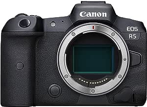
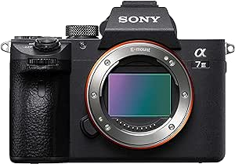

| Canon EOS R5 | Sony A7 III | ||||
|---|---|---|---|---|---|
|  |  | ||||
| Resolución | 45 megapíxeles | 60 megapíxeles | 30 megapíxeles | 24 megapíxeles | 36 megapíxeles |
| Rango ISO | 100-51,200 | 100-102,400 | 100-32,000 | 100-51,200 | 100-25,600 |
| Disparo continuo | Hasta 20 fps | Hasta 10 fps | |||
| Grabación de video | 4K a 120 fps, 8K a 30 fps | 4K a 30 fps, Full HD a 120 fps | |||
| 4K a 24 fps, Full HD a 60 fps | |||||